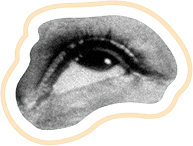
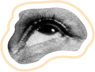

Beskeden
Scene:
Du har fortalt lidt mere om dig selv, og nu ligger du på værelset, da mobilen summer. En besked lyser skærmen op:
“Skal vi lave dansk sammen på fredag?”
Det er en fra gruppearbejdet. Du stirrer længe på den. Et lille stik i maven, skal du svare?

 
